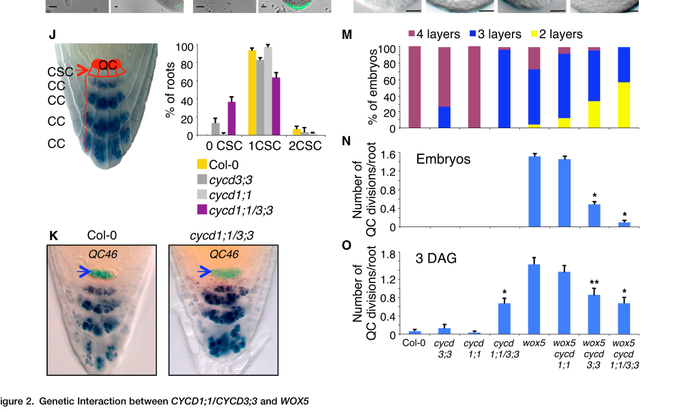

WOX5 (WUSCHEL-RELATED HOMEOBOX 5) is a plant-specific homeodomain transcription factor of the WUS-related WOX family that functions as the master regulator of the root stem cell niche organizer (quiescent center, QC) in Arabidopsis thaliana. WOX5 is expressed specifically in the QC, where it acts largely as a transcriptional repressor. The WOX5 protein moves from the QC into the adjacent columella (distal) stem cells, where it directly represses transcription of the differentiation-promoting transcription factor gene CDF4 by recruiting TOPLESS/TOPLESS-RELATED (TPL/TPR) corepressors and the histone deacetylase HDA19, thereby establishing a CDF4 gradient that keeps the cells adjacent to the QC undifferentiated while permitting their daughters to differentiate. Through this non-cell-autonomous repressive signal WOX5 maintains the columella stem cells and the QC, preserving root apical meristem identity. WOX5 expression is positioned within the root auxin gradient and is responsive to auxin; it is confined to the QC by the PHD-finger protein ROW1 (which represses ectopic WOX5 in the proximal meristem) and acts within the broader SHORTROOT/SCARECROW and PLETHORA regulatory networks that pattern the root tip. The protein contains a single WUS-type homeodomain (residues ~20-84) that mediates sequence-specific DNA binding, and it acts within the nucleus.
Definition: The process in which the columella (distal) stem cells beneath the root quiescent center are kept in an undifferentiated, self-renewing state, for example by an organizer-derived repressive signal that prevents premature differentiation.
Justification: WOX5 specifically maintains the columella/distal stem cells (those immediately contacting the QC), a process more specific than the generic positive regulation of stem cell population maintenance and not fully captured by existing terms.
Parent term: positive regulation of stem cell population maintenance
Supporting Evidence:
| GO Term | Evidence | Action | Reason |
|---|---|---|---|
|
GO:0006355
regulation of DNA-templated transcription
|
IBA
GO_REF:0000033 |
ACCEPT |
Summary: WOX5 is a WUS-type homeodomain transcription factor and acts on transcription; experimental evidence shows it directly represses the target gene CDF4 in columella stem cells. The IBA phylogenetic annotation to the generic regulation of DNA-templated transcription is correct but relatively unspecific. WOX5 acts predominantly as a repressor, so a more specific child term (negative regulation of transcription) is preferable where supported; this generic parent is retained as an accurate but non-core summary statement.
Reason: Accurate, conservative IBA annotation consistent with WOX5 being a DNA-binding transcription factor that regulates transcription of target genes. A more specific repressor term is added separately as a NEW annotation.
Supporting Evidence:
PMID:26028217
the WOX5 protein moves from the root niche organizer, the quiescent center, into the columella stem cells, where it directly represses the transcription factor gene CDF4.
file:ARATH/WOX5/WOX5-deep-research-falcon.md
it functions as both transcriptional repressor and activator and alters histone modifications and chromatin accessibility in QC cells.
|
|
GO:0003677
DNA binding
|
IEA
GO_REF:0000002 |
MODIFY |
Summary: WOX5 contains a WUS-type homeobox/homeodomain (UniProt DNA_BIND 20..84) and binds DNA. DNA binding is correct but generic; for a sequence-specific homeodomain transcription factor the more informative child term sequence-specific DNA binding (already annotated from PMID:26028217) is preferable. This InterPro-derived IEA is a true but shallow parent.
Reason: The term is correct but too general for a sequence-specific homeodomain transcription factor. Replace with sequence-specific DNA binding, which is independently supported experimentally and by the WUS-type homeobox domain.
Proposed replacements:
sequence-specific DNA binding
Supporting Evidence:
file:ARATH/WOX5/WOX5-uniprot.txt
DNA_BIND 20..84 /note="Homeobox; WUS-type"
file:ARATH/WOX5/WOX5-deep-research-falcon.md
WOX5 binds a cis-regulatory fragment ~200–121 bp upstream containing TAAT motifs.
|
|
GO:0003700
DNA-binding transcription factor activity
|
IEA
GO_REF:0000002 |
ACCEPT |
Summary: WOX5 is a homeodomain transcription factor that binds DNA in a sequence-specific manner and regulates target gene transcription (e.g., direct repression of CDF4). The InterPro IEA to DNA-binding transcription factor activity is well supported. Since WOX5 functions predominantly as a repressor, the more specific child term DNA-binding transcription repressor activity (GO:0001217) better captures its mode of action and is proposed as a NEW annotation; the parent is accepted as correct.
Reason: Correct molecular function for a WUS-type homeodomain transcription factor with demonstrated sequence-specific DNA binding and direct target gene regulation.
Supporting Evidence:
PMID:26028217
where it directly represses the transcription factor gene CDF4.
file:ARATH/WOX5/WOX5-uniprot.txt
DNA_BIND 20..84 /note="Homeobox; WUS-type"
file:ARATH/WOX5/WOX5-deep-research-falcon.md
Arabidopsis WOX5 (At3g11260; UniProt Q8H1D2) is a WUSCHEL-related homeobox transcription factor of the WUS clade, specifically expressed in the quiescent center (QC).
|
|
GO:0005634
nucleus
|
IEA
GO_REF:0000044 |
ACCEPT |
Summary: As a homeodomain transcription factor that represses target genes via chromatin-mediated mechanisms, WOX5 acts in the nucleus. UniProt curates nuclear localization from its WUS-type homeodomain. This is consistent with its DNA-binding and transcriptional repressor function.
Reason: Nuclear localization is expected and curated for this DNA-binding transcription factor and is consistent with chromatin-level repression of CDF4.
Supporting Evidence:
file:ARATH/WOX5/WOX5-uniprot.txt
SUBCELLULAR LOCATION: Nucleus
file:ARATH/WOX5/WOX5-deep-research-falcon.md
WOX5 is consistently characterized and experimentally used as a transcription factor with direct DNA binding and promoter occupancy (e.g., CDF4 promoter binding and ChIP enrichment), implying
|
|
GO:0099402
plant organ development
|
IEA
GO_REF:0000120 |
MARK AS OVER ANNOTATED |
Summary: WOX5 functions in root development (root apical meristem / stem cell niche), so it does participate in plant organ development. However, this term is very broad and non-specific; WOX5's role is well captured by more specific terms such as maintenance of root meristem identity (GO:0010078) and positive regulation of stem cell population maintenance (GO:1902459), which are already annotated.
Reason: Generic IEA keyword/ARBA mapping. The specific WOX5 developmental role is already captured by more informative terms; the broad parent over-annotates the gene.
Supporting Evidence:
PMID:25631790
WOX5 may be a target of ROW1
|
|
GO:0005515
protein binding
|
IPI
PMID:29352064 GIF Transcriptional Coregulators Control Root Meristem Homeo... |
REMOVE |
Summary: This IPI annotation derives from a study of GRF-INTERACTING FACTORs (GIFs) in root meristem homeostasis. The generic protein binding term is uninformative about WOX5 molecular function. The paper characterizes GIF coregulators and QC homeostasis but does not establish a specific, mechanistically informative WOX5 binding partner that would warrant a more precise MF term here.
Reason: Uninformative generic protein binding term that conveys no specific molecular function. Per curation guidelines this term should be avoided in favor of informative MF terms.
Supporting Evidence:
PMID:29352064
GIFs cannot bind to DNA per se, but they can function as coactivators of the GRFs
|
|
GO:0005634
nucleus
|
ISM
GO_REF:0000122 |
ACCEPT |
Summary: Sequence-based (AtSubP) prediction of nuclear localization, consistent with the curated UniProt nuclear location and with WOX5's function as a DNA-binding transcriptional repressor. Duplicate of the nucleus annotation; accepted.
Reason: Consistent with curated nuclear localization and with WOX5's transcription factor function. Duplicate CC annotations are acceptable.
Supporting Evidence:
file:ARATH/WOX5/WOX5-uniprot.txt
SUBCELLULAR LOCATION: Nucleus
|
|
GO:0043565
sequence-specific DNA binding
|
IPI
PMID:26028217 Organizer-Derived WOX5 Signal Maintains Root Columella Stem ... |
ACCEPT |
Summary: WOX5 is a WUS-type homeodomain transcription factor that binds the CDF4 regulatory region and directly represses CDF4 transcription. This sequence-specific DNA binding is the core biochemical activity underlying its repressor function in columella stem cells. Well supported.
Reason: Core molecular function. Sequence-specific DNA binding by the WUS-type homeodomain underlies WOX5 direct repression of its target gene CDF4.
Supporting Evidence:
PMID:26028217
the WOX5 protein moves from the root niche organizer, the quiescent center, into the columella stem cells, where it directly represses the transcription factor gene CDF4.
file:ARATH/WOX5/WOX5-uniprot.txt
DNA_BIND 20..84 /note="Homeobox; WUS-type"
file:ARATH/WOX5/WOX5-deep-research-falcon.md
experimentally, it binds cis-regulatory DNA elements and controls transcription of developmental regulators.
|
|
GO:0005515
protein binding
|
IPI
PMID:26028217 Organizer-Derived WOX5 Signal Maintains Root Columella Stem ... |
REMOVE |
Summary: PMID:26028217 shows WOX5 represses CDF4 by recruiting TPL/TPR corepressors and the histone deacetylase HDA19. The interacting partners identified (AGI loci corresponding to TPL/TPR-class corepressors and HDA19) are transcriptional corepressors. The generic protein binding term is uninformative; the mechanistically relevant interaction is binding to transcription corepressors, captured by GO:0001222 (transcription corepressor binding), proposed as a NEW annotation.
Reason: Uninformative generic protein binding term. The specific and informative interaction (recruitment of TPL/TPR corepressors and HDA19) is captured by a dedicated NEW transcription corepressor binding annotation.
Supporting Evidence:
PMID:26028217
WOX5 represses CDF4 transcription by recruiting TPL/TPR co-repressors and the histone deacetylase HDA19, which consequently induces histone deacetylation at the CDF4 regulatory region.
|
|
GO:1902459
positive regulation of stem cell population maintenance
|
IMP
PMID:26028217 Organizer-Derived WOX5 Signal Maintains Root Columella Stem ... |
ACCEPT |
Summary: Loss of WOX5 (wox5 mutant) causes differentiation of the columella stem cells subtending the QC, while QC-derived WOX5 signal maintains the columella (distal) stem cells in an undifferentiated state. WOX5 therefore positively regulates stem cell population maintenance. Strong genetic and mechanistic support.
Reason: Core biological process. WOX5 maintains columella/distal stem cells; its loss leads to premature stem cell differentiation.
Supporting Evidence:
PMID:26028217
Organizer-Derived WOX5 Signal Maintains Root Columella Stem Cells through Chromatin-Mediated Repression of CDF4 Expression.
PMID:25631790
QC expression of WOX5 is essential for maintenance of DSC activity.
file:ARATH/WOX5/WOX5-deep-research-falcon.md
it promotes QC mitotic quiescence and maintains the underlying columella stem cells (CSCs) in an undifferentiated state.
|
|
GO:0010078
maintenance of root meristem identity
|
IMP
PMID:25631790 ROW1 maintains quiescent centre identity by confining WOX5 e... |
ACCEPT |
Summary: WOX5 is required for QC identity and root apical meristem maintenance; its mis-expression or loss disrupts QC identity and columella differentiation. UniProt FUNCTION states WOX5 is involved in specification and maintenance of QC stem cells in the root apical meristem. Core process.
Reason: Core biological process strongly supported by genetic evidence (wox5 and row1/WOX5 mis-expression phenotypes) and UniProt curation.
Supporting Evidence:
PMID:25631790
QC expression of WOX5 is essential for maintenance of DSC activity.
file:ARATH/WOX5/WOX5-uniprot.txt
Transcription factor, which may be involved in the specification and maintenance of the stem cells (QC cells) in the root apical meristem (RAM).
file:ARATH/WOX5/WOX5-deep-research-falcon.md
WOX5 is a central organizer factor in the root stem cell niche
|
|
GO:0009733
response to auxin
|
IEP
PMID:16262712 A turanose-insensitive mutant suggests a role for WOX5 in au... |
KEEP AS NON CORE |
Summary: WOX5 expression is auxin-inducible (and turanose-inducible), and WOX5 is positioned within the root auxin gradient; a turanose-insensitive WOX5 loss-of-function mutant shows altered auxin homeostasis. This IEP annotation reflects WOX5 expression responding to auxin and its involvement in auxin-related root patterning. This is a peripheral/upstream regulatory relationship rather than WOX5's core molecular function.
Reason: Supported by expression evidence (auxin-inducible) and a loss-of-function phenotype affecting auxin homeostasis, but this is an upstream/contextual relationship, not the core stem cell maintenance function of WOX5.
Supporting Evidence:
PMID:16262712
We found that WOX5 is both turanose- and auxin-inducible.
PMID:16262712
we propose a role for WOX5 in the root apical meristem as a negative trigger of IAA homeostatic mechanisms allowing the maintenance of a restricted area of auxin maximum
file:ARATH/WOX5/WOX5-deep-research-falcon.md
WOX5 promotes local auxin biosynthesis in the QC and participates in a regulatory relationship with auxin response maxima that support organizer function.
|
|
GO:0003700
DNA-binding transcription factor activity
|
ISS
PMID:11118137 Arabidopsis transcription factors: genome-wide comparative a... |
ACCEPT |
Summary: WOX5 was classified as a transcription factor in the genome-wide Arabidopsis transcription factor analysis (homeobox/homeodomain class). This ISS annotation to DNA-binding transcription factor activity is correct and consistent with the experimentally demonstrated sequence-specific DNA binding and direct target repression. Duplicate of the InterPro IEA; accepted.
Reason: Correct molecular function supported by membership in the homeodomain transcription factor class and by experimental DNA binding. Duplicate MF annotations are acceptable.
Supporting Evidence:
PMID:11118137
Arabidopsis dedicates over 5% of its genome to code for more than 1500 transcription factors
PMID:26028217
where it directly represses the transcription factor gene CDF4.
|
|
GO:0001217
DNA-binding transcription repressor activity
|
IDA
PMID:26028217 Organizer-Derived WOX5 Signal Maintains Root Columella Stem ... |
NEW |
Summary: NEW annotation. WOX5 binds the CDF4 regulatory region in a sequence-specific manner and directly represses CDF4 transcription by recruiting TPL/TPR corepressors and HDA19, inducing histone deacetylation. This establishes WOX5 as a DNA-binding transcriptional repressor, a more informative molecular function than the generic DNA-binding transcription factor activity. (The RNA polymerase II-specific child GO:0001227 is avoided as plant repressor annotations conventionally use the generic term.)
Reason: Captures the specific, experimentally demonstrated repressor mode of action of WOX5 at its direct target CDF4, replacing reliance on the generic DNA-binding transcription factor activity term.
Supporting Evidence:
PMID:26028217
where it directly represses the transcription factor gene CDF4. This creates a gradient of CDF4 transcription, which promotes differentiation opposite to the WOX5 gradient
PMID:26028217
WOX5 represses CDF4 transcription by recruiting TPL/TPR co-repressors and the histone deacetylase HDA19
file:ARATH/WOX5/WOX5-deep-research-falcon.md
17 of them downregulated, highlighting strong repressor activity in that context.
|
|
GO:0001222
transcription corepressor binding
|
IPI
PMID:26028217 Organizer-Derived WOX5 Signal Maintains Root Columella Stem ... |
NEW |
Summary: NEW annotation. WOX5 recruits the TOPLESS/TOPLESS-RELATED (TPL/TPR) corepressors and the histone deacetylase HDA19 to repress CDF4. Binding these transcriptional corepressors is the informative molecular function underlying the WOX5 protein-binding interactions reported in PMID:26028217, replacing the generic protein binding annotations.
Reason: Provides an informative molecular function for the WOX5 protein-protein interactions (TPL/TPR and HDA19 recruitment) that the generic GO:0005515 annotations failed to convey.
Supporting Evidence:
PMID:26028217
WOX5 represses CDF4 transcription by recruiting TPL/TPR co-repressors and the histone deacetylase HDA19
file:ARATH/WOX5/WOX5-deep-research-falcon.md
WOX5 interacts with TPL/TPR; via TPL/TPRs it recruits HDA19, reducing histone H3 acetylation at the CDF4 regulatory region.
|
|
GO:0045892
negative regulation of DNA-templated transcription
|
IDA
PMID:26028217 Organizer-Derived WOX5 Signal Maintains Root Columella Stem ... |
NEW |
Summary: NEW annotation. WOX5 directly represses transcription of CDF4 via recruitment of TPL/TPR corepressors and HDA19-mediated histone deacetylation, a clear negative regulation of transcription. This biological process complements the generic regulation-of-transcription IBA term with the experimentally established direction of regulation (repression).
Reason: WOX5 acts predominantly as a transcriptional repressor at its direct target CDF4; the specific negative-regulation term is supported by direct experimental evidence.
Supporting Evidence:
PMID:26028217
WOX5 represses CDF4 transcription by recruiting TPL/TPR co-repressors and the histone deacetylase HDA19, which consequently induces histone deacetylation at the CDF4 regulatory region.
file:ARATH/WOX5/WOX5-deep-research-falcon.md
A central mechanistic insight is that WOX5 directly represses **CDF4** (a differentiation-promoting DOF transcription factor) in the QC/CSC region.
|
|
GO:0045596
negative regulation of cell differentiation
|
IMP
PMID:26028217 Organizer-Derived WOX5 Signal Maintains Root Columella Stem ... |
NEW |
Summary: NEW annotation. The QC-derived WOX5 signal keeps columella (distal) stem cells undifferentiated by repressing the differentiation-promoting factor CDF4; loss of WOX5 leads to premature differentiation (e.g., ectopic starch granule accumulation) of the distal stem cells. WOX5 thus negatively regulates cell differentiation in the root distal stem cell niche.
Reason: Strong genetic and mechanistic evidence that WOX5 suppresses differentiation of columella stem cells; this is central to its biological role and is not captured by the existing broad organ-development term.
Supporting Evidence:
PMID:26028217
allowing stem cell daughter cells to exit the stem cell state.
PMID:25631790
suggesting that these cells underwent premature differentiation.
file:ARATH/WOX5/WOX5-deep-research-falcon.md
Loss of WOX5 causes CSC differentiation beneath the QC and ectopic QC divisions
|
Q: Beyond CDF4, what is the genome-wide set of direct WOX5 DNA-binding targets in the QC and columella stem cells, and which are activated versus repressed?
Q: What is the precise DNA sequence motif bound by the WOX5 WUS-type homeodomain, and does WOX5 bind DNA as a monomer or in complexes with partners such as PLETHORA?
Q: How is WOX5 cell-to-cell movement from the QC into columella stem cells regulated, and is movement required for CDF4 repression in vivo?
The research report should be a detailed narrative explaining the function, biological processes, and localization of the gene product. Citations should be given for all claims.
You should prioritize authoritative reviews and primary scientific literature when conducting research. You can supplement
this with annotations you find in gene/protein databases, but these can be outdated or inaccurate.
We are specifically interested in the primary function of the gene - for enzymes, what reaction is catalyzed, and what is the substrate specificity? For transporters, what is the substrate? For structural proteins or adapters, what is the broader structural role? For signaling molecules, what is the role in the pathway.
We are interested in where in or outside the cell the gene product carries out its function.
We are also interested in the signaling or biochemical pathways in which the gene functions. We are less interested in broad pleiotropic effects, except where these elucidate the precise role.
Include evidence where possible. We are interested in both experimental evidence as well as inference from structure, evolution, or bioinformatic analysis. Precise studies should be prioritized over high-throughput, where available.
WOX5 (WUSCHEL-RELATED HOMEOBOX 5) is a WUS-clade homeobox transcription factor that is specifically expressed in the root quiescent center (QC) and acts as a stem cell organizer hub that (i) maintains QC mitotic quiescence and identity and (ii) maintains the distal columella stem cells (CSCs) in an undifferentiated state through QC-to-CSC signaling. (zhang2024decipheringthemolecular pages 1-2, pi2015organizerderivedwox5signal pages 1-3)
Recent 2024 work provides a genomic-scale view of WOX5 function in the QC, showing that WOX5 acts as both an activator and repressor and reshapes chromatin accessibility and histone modifications in QC nuclei, with 1,423 genes activated and 947 genes repressed by WOX5. (zhang2024decipheringthemolecular pages 4-6, zhang2024decipheringthemolecular pages 1-2)
A major mechanistic axis is WOX5-mediated chromatin repression of the differentiation factor CDF4 via recruitment of the co-repressors TOPLESS/TOPLESS-RELATED (TPL/TPR) and HDA19, coupled to reduced histone acetylation at the CDF4 locus. (pi2015organizerderivedwox5signal pages 3-4, pi2015organizerderivedwox5signal pages 11-12)
The Arabidopsis root stem cell niche is organized around a small group of slowly dividing cells termed the quiescent center (QC), which acts as a stem cell organizer. Loss or ablation of QC function disrupts neighboring stem cells and promotes their differentiation. (zhang2024decipheringthemolecular pages 1-2)
A recent review (published 9 May 2024) synthesizes modern understanding of meristem quiescence, emphasizing that the QC is a low-mitotic reservoir that maintains surrounding stem cells and supports long-term root growth and environmental responsiveness. (eljebbawi2024stemcellquiescence pages 1-3)
WOX5 is described as a QC-specific WUSCHEL-related homeobox transcription factor that is a central regulator of QC function and QC-to-stem-cell signaling. (zhang2024decipheringthemolecular pages 1-2)
Functionally, WOX5 is now understood as a bifunctional transcription factor (context-dependent repressor and activator) that can also drive changes in chromatin state (histone modifications, accessibility). (zhang2024decipheringthemolecular pages 1-2, zhang2024decipheringthemolecular pages 4-6)
A key 2024 resource study profiled QC and columella nuclei to define WOX5-dependent programs, concluding that WOX5 affects both transcription and epigenetic features of QC identity. (Zhang et al.; published online 18 Nov 2024; https://doi.org/10.1038/s44318-024-00302-2) (zhang2024decipheringthemolecular pages 1-2, zhang2024decipheringthemolecular pages 4-6)
Quantitatively, in sorted QC nuclei, WOX5 was associated with 1,423 activated and 947 repressed genes. These include categories of (i) cell division regulators (e.g., cyclins/inhibitors), (ii) differentiation regulators (including CDF4), and (iii) auxin-related regulators. (zhang2024decipheringthemolecular pages 4-6)
This 2024 work also expands the putative QC functional repertoire by reporting WOX5 regulation of pathways such as nitrate transport and basal expression of genes typically associated with more mature root tissues, supporting a view of QC cells as “reserve/primed” cells. (zhang2024decipheringthemolecular pages 1-2)
A 2024 Nature Plants study defined a coherent feed-forward loop (cFFL) where WOX5 and HAN repress CDF4, with an important output being expression of TAA1 (auxin biosynthesis) and maintenance of an auxin response maximum in the organizer. (Sharma et al.; Oct 2024; https://doi.org/10.1038/s41477-024-01810-z) (sharma2024acoherentfeedforward pages 1-7)
In inducible WOX5 activation experiments, HAN was identified as the most strongly upregulated transcript, increasing ~8–9-fold at 1 and 4 hours after WOX5 activation, and HAN was shown to be required for WOX5-driven ectopic CSC-like states. (sharma2024acoherentfeedforward pages 7-11)
Earlier work supported a model in which WOX5 protein moves from QC into CSCs and that this movement is required for CSC maintenance. (pi2015organizerderivedwox5signal pages 1-3, pi2015organizerderivedwox5signal pages 4-5)
However, a 2024 thesis-style analysis highlights a controversy: recombination/transgene contamination in a key immobile WOX5 reporter line could confound conclusions, and regenerated transgenics suggest that while movement is observed, WOX5 movement may not be required for rescuing CSC identity—raising the possibility of secondary mobile signals downstream of QC-local WOX5 activity. (vikram2024regulationofcytokinin pages 83-86)
WOX5 is a homeobox transcription factor; experimentally, it binds cis-regulatory DNA elements and controls transcription of developmental regulators. (pi2015organizerderivedwox5signal pages 1-3, pi2015organizerderivedwox5signal pages 4-5)
A central mechanistic insight is that WOX5 directly represses CDF4 (a differentiation-promoting DOF transcription factor) in the QC/CSC region.
Evidence includes:
- Ectopic CDF4 expression in wox5-1, including at/near QC, and repression of CDF4 by inducible WOX5. (pi2015organizerderivedwox5signal pages 3-4)
- WOX5 enrichment at a cis-regulatory region upstream of CDF4 containing TAAT motifs. (pi2015organizerderivedwox5signal pages 3-4)
- A chromatin repression mechanism in which WOX5 interacts with TPL/TPR co-repressors and—via these—recruits HDA19, reducing histone H3 acetylation at the CDF4 regulatory region. (Pi et al., Jun 2015; https://doi.org/10.1016/j.devcel.2015.04.024) (pi2015organizerderivedwox5signal pages 11-12, pi2015organizerderivedwox5signal pages 11-11)
WOX5 promotes QC mitotic quiescence by repressing D-type cyclin activity, with strong genetic evidence that CYCD1;1/CYCD3;3 mediate much of the wox5 QC-division phenotype.
Quantitative embryonic data:
- Additional QC transverse divisions occurred in 89% of wox5-1 embryos, reduced to 45% in wox5 cycd3;3, and to 8% in wox5 cycd1;1 cycd3;3. (Forzani et al., Aug 2014; https://doi.org/10.1016/j.cub.2014.07.019) (forzani2014wox5suppressescyclin pages 3-4)
- QC-specific ectopic CYCD3;3 expression (pWOX5:vYFP-CYCD3;3) induced QC divisions in 100% of embryos, demonstrating sufficiency to break quiescence. (forzani2014wox5suppressescyclin pages 3-4)
These quantitative results are also captured in the extracted figure panels from the paper. (forzani2014wox5suppressescyclin media 14bfa87e, forzani2014wox5suppressescyclin media 435d2f04)
WOX5 function is associated with interaction/complex formation with other niche regulators, including BRAVO and PLT3, in the context of QC quiescence regulation. (zhang2024decipheringthemolecular pages 1-2)
A 2024 preprint further emphasizes that WOX5 participates in cell-type-specific transcription factor complex formation with BRAVO and PLT3, using quantitative live-cell interaction approaches (FRET-FLIM) and modeling to argue that complex “signatures” contribute to cell specificity in niche regulation. (Strotmann et al., Apr 2024; https://doi.org/10.1101/2024.04.26.591257) (strotmann2024stemcellhomeostasis pages 1-5)
WOX5 sits in an organizer network tightly coupled to auxin:
- WOX5 promotes local auxin biosynthesis in the QC and participates in a regulatory relationship with auxin response maxima that support organizer function. (zhang2024decipheringthemolecular pages 1-2, sharma2024acoherentfeedforward pages 1-7)
- The 2024 WOX5–HAN–CDF4 cFFL explicitly links WOX5-regulated transcription to TAA1 expression and organizer auxin maxima. (sharma2024acoherentfeedforward pages 1-7)
Secreted peptide signals contribute to root stem cell niche maintenance, with WOX5 widely used as a QC marker in this context (e.g., QC expansion assessed via WOX5 expression). (Matsuzaki et al., Aug 2010; https://doi.org/10.1126/science.1191132) (lou2024genomewideanalysisof pages 15-17)
WOX5 is described as specifically expressed in QC cells in the Arabidopsis root meristem. (zhang2024decipheringthemolecular pages 1-2)
Classic genetic work analyzing organizers and markers also documented WOX5 reporter/transcript assays and notes contexts where WOX5-associated staining/expression extends into adjacent stem cells (including columella stem cell region), consistent with QC-centered expression with proximal influence. (Sarkar et al., Apr 2007; https://doi.org/10.1038/nature05703) (sarkar2007conservedfactorsregulate pages 1-10)
Direct “nuclear localization” phrasing was limited in the available excerpts; however, WOX5 is consistently characterized and experimentally used as a transcription factor with direct DNA binding and promoter occupancy (e.g., CDF4 promoter binding and ChIP enrichment), implying nuclear function. (pi2015organizerderivedwox5signal pages 3-4, pi2015organizerderivedwox5signal pages 4-5)
WOX5 expression in the QC is non-cell-autonomously necessary for maintaining underlying CSCs undifferentiated. (zhang2024decipheringthemolecular pages 1-2)
Protein movement evidence:
- WOX5 protein movement from QC into CSCs is reported, forming a QC-to-CSC gradient, and movement-blocking fusions were used to test this model. (pi2015organizerderivedwox5signal pages 4-5, pi2015organizerderivedwox5signal pages 1-3)
- A 2024 reassessment suggests movement may not be required for CSC maintenance in some transgenic rescue assays, highlighting an active area of debate and motivating hypotheses about alternative mobile factors. (vikram2024regulationofcytokinin pages 83-86)
WOX5’s organizer/stemness functions connect directly to applied regeneration biology because they encode a transcriptional program capable of maintaining or reinstating stem-cell-like states.
A peer-reviewed 2025 study reported that WOX5 contributes to somatic embryogenesis induction in Arabidopsis and links this to auxin-related pathways and regulators (e.g., TAA1, YUC1, PIN1, LEC2), highlighting WOX5 as a potential lever to improve in vitro regeneration in recalcitrant species (application rationale and translational framing). (Wójcik et al., May 2025; https://doi.org/10.1186/s12870-025-06687-4) (wojcik2025fromrootto pages 1-2)
An authoritative Plant Journal review (published Dec 2025) frames WOX/WUS family regulators as practical tools to improve transformation/regeneration, especially in recalcitrant crop genotypes, and discusses implementation strategies (ortholog choice, promoter/induction control, and “altruistic transformation” to reduce pleiotropy). (Youngstrom et al., Dec 2025; https://doi.org/10.1111/tpj.17193) (youngstrom2025unlockingregenerationpotential pages 5-6)
Although many quantitative gains in transformation frequency in that review pertain to WOX/WUS orthologs in crops (rather than AtWOX5 directly), these represent real-world implementations of the same mechanistic class of factors that WOX5 belongs to and provides a roadmap for how WOX-like regulators are deployed in biotechnology. (youngstrom2025unlockingregenerationpotential pages 5-6)
Selected quantitative findings most relevant for functional annotation:
- QC transcriptome scale (2024): WOX5-associated differential expression in QC nuclei includes 1,423 activated and 947 repressed genes. (zhang2024decipheringthemolecular pages 4-6)
- Rapid transcriptional response (2015): after 1 h WOX5 induction (with cycloheximide), 18 genes were significantly changed (≥2-fold; p ≤ 0.05), with 17/18 downregulated, consistent with strong repressor capacity in that assay context. (pi2015organizerderivedwox5signal pages 4-5)
- WOX5→HAN module (2024): HAN induced ~8–9-fold at 1 h and 4 h after WOX5 activation. (sharma2024acoherentfeedforward pages 7-11)
- QC division penetrance (2014): 89% QC divisions in wox5-1 embryos; suppression to 45% and 8% in cycd mutant combinations; and 100% QC divisions upon QC-driven CYCD3;3 expression. (forzani2014wox5suppressescyclin pages 3-4, forzani2014wox5suppressescyclin media 14bfa87e)
The following table consolidates core functional-annotation facts, mechanisms, and quantitative data.
| Finding | Evidence/Details | Key reference (authors/year) | DOI URL | Citation ID |
|---|---|---|---|---|
| Molecular function / domains | Arabidopsis WOX5 (At3g11260; UniProt Q8H1D2) is a WUSCHEL-related homeobox transcription factor of the WUS clade, specifically expressed in the quiescent center (QC). Recent genomic work shows it functions as both transcriptional repressor and activator and alters histone modifications and chromatin accessibility in QC cells. This aligns with the UniProt/domain assignment of a homeodomain-containing regulator rather than an enzyme or transporter. (zhang2024decipheringthemolecular pages 1-2) | Zhang et al. 2024 | https://doi.org/10.1038/s44318-024-00302-2 | (zhang2024decipheringthemolecular pages 1-2) |
| Key biological role in QC and columella stem cells | WOX5 is a central organizer factor in the root stem cell niche: it promotes QC mitotic quiescence and maintains the underlying columella stem cells (CSCs) in an undifferentiated state. Loss of WOX5 causes CSC differentiation beneath the QC and ectopic QC divisions; ectopic WOX5 can induce stem-cell-like traits in columella cells. (sharma2024acoherentfeedforward pages 1-7, pi2015organizerderivedwox5signal pages 1-3, zhang2024decipheringthemolecular pages 1-2) | Sarkar et al. 2007; Pi et al. 2015; Zhang et al. 2024 | https://doi.org/10.1038/nature05703; https://doi.org/10.1016/j.devcel.2015.04.024; https://doi.org/10.1038/s44318-024-00302-2 | (pi2015organizerderivedwox5signal pages 1-3, zhang2024decipheringthemolecular pages 1-2) |
| Direct target: CDF4 | CDF4 is a direct differentiation-promoting target repressed by WOX5. In wox5-1, CDF4 expression expands into QC/CSC territory; inducible WOX5 represses CDF4; WOX5 binds a cis-regulatory fragment ~200–121 bp upstream containing TAAT motifs. Mutation of a WOX5-binding site (BS2) phenocopies ectopic QC/CSC reporter expression. (pi2015organizerderivedwox5signal pages 3-4, pi2015organizerderivedwox5signal pages 4-5) | Pi et al. 2015 | https://doi.org/10.1016/j.devcel.2015.04.024 | (pi2015organizerderivedwox5signal pages 3-4, pi2015organizerderivedwox5signal pages 4-5) |
| Direct target: CYCD3;3 | WOX5 represses CYCD3;3 to establish QC quiescence. CYCD3;3 promoter interaction and genetic suppression data support this mechanism: extra QC divisions in wox5 are reduced in cycd mutant backgrounds, and QC-specific CYCD3;3 expression is sufficient to force QC divisions. (zhang2024decipheringthemolecular pages 1-2, forzani2014wox5suppressescyclin pages 3-4, forzani2014wox5suppressescyclin media 14bfa87e) | Forzani et al. 2014; Zhang et al. 2024 | https://doi.org/10.1016/j.cub.2014.07.019; https://doi.org/10.1038/s44318-024-00302-2 | (forzani2014wox5suppressescyclin pages 3-4, forzani2014wox5suppressescyclin media 14bfa87e, zhang2024decipheringthemolecular pages 1-2) |
| Direct/functional targets: HAN and TAA1 | Recent work places HAN as a key WOX5-induced mediator and TAA1 as an output of the WOX5–HAN–CDF4 coherent feed-forward loop. HAN was the most strongly induced transcript after WOX5 induction (~8–9-fold at 1 and 4 h), is required for WOX5-induced ectopic CSC formation, and its promoter contains a distal WOX5-responsive region. TAA1 links WOX5 function to local auxin biosynthesis in the organizer. (sharma2024acoherentfeedforward pages 1-7, sharma2024acoherentfeedforward pages 7-11, zhang2024decipheringthemolecular pages 4-6) | Sharma et al. 2024; Zhang et al. 2024 | https://doi.org/10.1038/s41477-024-01810-z; https://doi.org/10.1038/s44318-024-00302-2 | (sharma2024acoherentfeedforward pages 1-7, sharma2024acoherentfeedforward pages 7-11, zhang2024decipheringthemolecular pages 4-6) |
| Chromatin / co-repressor mechanism | WOX5 represses CDF4 through a chromatin-based mechanism involving TOPLESS/TOPLESS-RELATED (TPL/TPR) co-repressors and HDA19. WOX5 interacts with TPL/TPR; via TPL/TPRs it recruits HDA19, reducing histone H3 acetylation at the CDF4 regulatory region. Sharma 2024 further links WOX5/CDF4 antagonism to H3K9Ac/H3K14Ac removal, while Zhang 2024 broadens this to QC-wide effects on H3K9ac, H3K4me3, H3K27me3 and chromatin accessibility. (pi2015organizerderivedwox5signal pages 11-12, pi2015organizerderivedwox5signal pages 11-11, sharma2024acoherentfeedforward pages 1-7, zhang2024decipheringthemolecular pages 4-6) | Pi et al. 2015; Sharma et al. 2024; Zhang et al. 2024 | https://doi.org/10.1016/j.devcel.2015.04.024; https://doi.org/10.1038/s41477-024-01810-z; https://doi.org/10.1038/s44318-024-00302-2 | (pi2015organizerderivedwox5signal pages 11-12, pi2015organizerderivedwox5signal pages 11-11, sharma2024acoherentfeedforward pages 1-7, zhang2024decipheringthemolecular pages 4-6) |
| Intercellular movement and controversy | Foundational work reported that WOX5 protein moves from the QC into CSCs, forming a gradient highest in QC and weaker in CSCs, consistent with non-cell-autonomous maintenance of CSC identity. However, recent reassessment indicates earlier evidence for movement-dependent rescue was confounded by transgene contamination; fresh transgenics suggest WOX5 movement occurs but is not strictly required for CSC maintenance, raising the possibility of downstream mobile signals. (pi2015organizerderivedwox5signal pages 11-12, pi2015organizerderivedwox5signal pages 1-3, vikram2024regulationofcytokinin pages 83-86, vikram2024regulationofcytokinina pages 83-86) | Pi et al. 2015; Vikram 2024 thesis/excerpt | https://doi.org/10.1016/j.devcel.2015.04.024 | (pi2015organizerderivedwox5signal pages 11-12, pi2015organizerderivedwox5signal pages 1-3, vikram2024regulationofcytokinin pages 83-86, vikram2024regulationofcytokinina pages 83-86) |
| Quantitative data: genome-scale and inducible responses | Recent QC-specific profiling found 1,423 WOX5-activated and 947 WOX5-repressed genes in sorted QC nuclei, expanding WOX5 biology beyond classic stem-cell maintenance to nitrate transport and mature-root-associated programs. Earlier rapid induction assays found 18 genes significantly changed after 1 h of WOX5 induction, 17 of them downregulated, highlighting strong repressor activity in that context. HAN induction after WOX5 activation reached ~8–9-fold at 1 and 4 h. (zhang2024decipheringthemolecular pages 4-6, sharma2024acoherentfeedforward pages 7-11, pi2015organizerderivedwox5signal pages 4-5) | Zhang et al. 2024; Sharma et al. 2024; Pi et al. 2015 | https://doi.org/10.1038/s44318-024-00302-2; https://doi.org/10.1038/s41477-024-01810-z; https://doi.org/10.1016/j.devcel.2015.04.024 | (zhang2024decipheringthemolecular pages 4-6, sharma2024acoherentfeedforward pages 7-11, pi2015organizerderivedwox5signal pages 4-5) |
| Quantitative data: QC division genetics | In embryos, additional QC transverse divisions occurred in 89% of wox5-1 roots, dropping to 45% in wox5 cycd3;3 and 8% in wox5 cycd1;1 cycd3;3. QC-specific ectopic CYCD3;3 expression caused QC divisions in 100% of embryos, showing CYCD3;3 is sufficient to break QC quiescence. (forzani2014wox5suppressescyclin pages 3-4, forzani2014wox5suppressescyclin media 14bfa87e) | Forzani et al. 2014 | https://doi.org/10.1016/j.cub.2014.07.019 | (forzani2014wox5suppressescyclin pages 3-4, forzani2014wox5suppressescyclin media 14bfa87e) |
| Pathway context | WOX5 sits in a broader stem-cell-niche network integrating auxin, peptide signaling, and other transcription factors. It participates in a positive relationship with local auxin biosynthesis/auxin response maxima in the QC (notably via TAA1), while secreted sulfated peptide pathways (TPST-dependent) and CLE/CLV/ACR4 signaling are part of the niche context that constrains stemness and WOX5-domain behavior. Reviews from 2024 emphasize WOX5 together with PLTs and SCR as core QC regulators. (sharma2024acoherentfeedforward pages 1-7, lou2024genomewideanalysisof pages 15-17, eljebbawi2024stemcellquiescence pages 1-3) | Sharma et al. 2024; Matsuzaki et al. 2010; Eljebbawi et al. 2024 | https://doi.org/10.1038/s41477-024-01810-z; https://doi.org/10.1126/science.1191132; https://doi.org/10.1093/jxb/erae201 | (sharma2024acoherentfeedforward pages 1-7, lou2024genomewideanalysisof pages 15-17, eljebbawi2024stemcellquiescence pages 1-3) |
Table: This table summarizes core functional-annotation facts for Arabidopsis thaliana WOX5, emphasizing experimentally supported molecular roles, direct targets, chromatin mechanisms, pathway context, and recent quantitative findings useful for a final evidence-based report.
WOX5’s primary function in Arabidopsis is best annotated as a QC-expressed homeobox transcription factor that stabilizes the stem cell niche by combining two mechanistic modes: (i) enforcing a low-division organizer state (via repression of cyclin D programs such as CYCD3;3) and (ii) actively repressing differentiation programs in the distal stem-cell lineage (via chromatin-mediated repression of CDF4, involving TPL/TPR and HDA19). (forzani2014wox5suppressescyclin pages 3-4, pi2015organizerderivedwox5signal pages 3-4, pi2015organizerderivedwox5signal pages 11-12)
The most impactful 2024 advance is the shift from single-gene mechanistic models to a genome-scale organizer regulatory architecture, where WOX5 remodels chromatin accessibility and histone marks in QC nuclei and coordinates hormone-related (auxin biosynthesis) and differentiation-related outputs through defined motifs such as the WOX5–HAN–CDF4 coherent feed-forward loop. (zhang2024decipheringthemolecular pages 4-6, sharma2024acoherentfeedforward pages 1-7)
Finally, a key open issue at present is whether the WOX5 protein itself must move into CSCs to maintain CSC fate, or whether its QC-local activity produces other mobile cues; recent transgenic re-analyses argue the latter may be sufficient, indicating an actively evolving mechanistic interpretation. (vikram2024regulationofcytokinin pages 83-86, pi2015organizerderivedwox5signal pages 4-5)
References
(zhang2024decipheringthemolecular pages 1-2): Ning Zhang, Pamela Bitterli, Peter Oluoch, Marita Hermann, Ernst Aichinger, Edwin P Groot, and Thomas Laux. Deciphering the molecular logic of wox5 function in the root stem cell organizer. The EMBO Journal, 44:281-303, Nov 2024. URL: https://doi.org/10.1038/s44318-024-00302-2, doi:10.1038/s44318-024-00302-2. This article has 15 citations.
(pi2015organizerderivedwox5signal pages 1-3): Limin Pi, Ernst Aichinger, Eric van der Graaff, Cristina I. Llavata-Peris, Dolf Weijers, Lars Hennig, Edwin Groot, and Thomas Laux. Organizer-derived wox5 signal maintains root columella stem cells through chromatin-mediated repression of cdf4 expression. Developmental cell, 33 5:576-88, Jun 2015. URL: https://doi.org/10.1016/j.devcel.2015.04.024, doi:10.1016/j.devcel.2015.04.024. This article has 429 citations and is from a highest quality peer-reviewed journal.
(zhang2024decipheringthemolecular pages 4-6): Ning Zhang, Pamela Bitterli, Peter Oluoch, Marita Hermann, Ernst Aichinger, Edwin P Groot, and Thomas Laux. Deciphering the molecular logic of wox5 function in the root stem cell organizer. The EMBO Journal, 44:281-303, Nov 2024. URL: https://doi.org/10.1038/s44318-024-00302-2, doi:10.1038/s44318-024-00302-2. This article has 15 citations.
(pi2015organizerderivedwox5signal pages 3-4): Limin Pi, Ernst Aichinger, Eric van der Graaff, Cristina I. Llavata-Peris, Dolf Weijers, Lars Hennig, Edwin Groot, and Thomas Laux. Organizer-derived wox5 signal maintains root columella stem cells through chromatin-mediated repression of cdf4 expression. Developmental cell, 33 5:576-88, Jun 2015. URL: https://doi.org/10.1016/j.devcel.2015.04.024, doi:10.1016/j.devcel.2015.04.024. This article has 429 citations and is from a highest quality peer-reviewed journal.
(pi2015organizerderivedwox5signal pages 11-12): Limin Pi, Ernst Aichinger, Eric van der Graaff, Cristina I. Llavata-Peris, Dolf Weijers, Lars Hennig, Edwin Groot, and Thomas Laux. Organizer-derived wox5 signal maintains root columella stem cells through chromatin-mediated repression of cdf4 expression. Developmental cell, 33 5:576-88, Jun 2015. URL: https://doi.org/10.1016/j.devcel.2015.04.024, doi:10.1016/j.devcel.2015.04.024. This article has 429 citations and is from a highest quality peer-reviewed journal.
(eljebbawi2024stemcellquiescence pages 1-3): Ali Eljebbawi, Anika Dolata, Vivien I Strotmann, and Yvonne Stahl. Stem cell quiescence and dormancy in plant meristems. Journal of Experimental Botany, 75:6022-6036, May 2024. URL: https://doi.org/10.1093/jxb/erae201, doi:10.1093/jxb/erae201. This article has 18 citations and is from a domain leading peer-reviewed journal.
(sharma2024acoherentfeedforward pages 1-7): Mohan Sharma, Thomas Friedrich, Peter Oluoch, Ning Zhang, Federico Peruzzo, Vikram Jha, Limin Pi, Edwin Philip Groot, Noortje Kornet, Marie Follo, Ernst Aichinger, Christian Fleck, and Thomas Laux. A coherent feed-forward loop in the arabidopsis root stem cell organizer regulates auxin biosynthesis and columella stem cell maintenance. Nature plants, 10:1737-1748, Oct 2024. URL: https://doi.org/10.1038/s41477-024-01810-z, doi:10.1038/s41477-024-01810-z. This article has 15 citations and is from a highest quality peer-reviewed journal.
(sharma2024acoherentfeedforward pages 7-11): Mohan Sharma, Thomas Friedrich, Peter Oluoch, Ning Zhang, Federico Peruzzo, Vikram Jha, Limin Pi, Edwin Philip Groot, Noortje Kornet, Marie Follo, Ernst Aichinger, Christian Fleck, and Thomas Laux. A coherent feed-forward loop in the arabidopsis root stem cell organizer regulates auxin biosynthesis and columella stem cell maintenance. Nature plants, 10:1737-1748, Oct 2024. URL: https://doi.org/10.1038/s41477-024-01810-z, doi:10.1038/s41477-024-01810-z. This article has 15 citations and is from a highest quality peer-reviewed journal.
(pi2015organizerderivedwox5signal pages 4-5): Limin Pi, Ernst Aichinger, Eric van der Graaff, Cristina I. Llavata-Peris, Dolf Weijers, Lars Hennig, Edwin Groot, and Thomas Laux. Organizer-derived wox5 signal maintains root columella stem cells through chromatin-mediated repression of cdf4 expression. Developmental cell, 33 5:576-88, Jun 2015. URL: https://doi.org/10.1016/j.devcel.2015.04.024, doi:10.1016/j.devcel.2015.04.024. This article has 429 citations and is from a highest quality peer-reviewed journal.
(vikram2024regulationofcytokinin pages 83-86): V Vikram. Regulation of cytokinin biosynthesis by wox9 and hd-zipiii interaction in arabidopsis thaliana root meristem size control. Unknown journal, 2024.
(pi2015organizerderivedwox5signal pages 11-11): Limin Pi, Ernst Aichinger, Eric van der Graaff, Cristina I. Llavata-Peris, Dolf Weijers, Lars Hennig, Edwin Groot, and Thomas Laux. Organizer-derived wox5 signal maintains root columella stem cells through chromatin-mediated repression of cdf4 expression. Developmental cell, 33 5:576-88, Jun 2015. URL: https://doi.org/10.1016/j.devcel.2015.04.024, doi:10.1016/j.devcel.2015.04.024. This article has 429 citations and is from a highest quality peer-reviewed journal.
(forzani2014wox5suppressescyclin pages 3-4): Celine Forzani, Ernst Aichinger, Emily Sornay, Viola Willemsen, Thomas Laux, Walter Dewitte, and James A.H. Murray. Wox5 suppresses cyclin d activity to establish quiescence at the center of the root stem cell niche. Current Biology, 24:1939-1944, Aug 2014. URL: https://doi.org/10.1016/j.cub.2014.07.019, doi:10.1016/j.cub.2014.07.019. This article has 291 citations and is from a highest quality peer-reviewed journal.
(forzani2014wox5suppressescyclin media 14bfa87e): Celine Forzani, Ernst Aichinger, Emily Sornay, Viola Willemsen, Thomas Laux, Walter Dewitte, and James A.H. Murray. Wox5 suppresses cyclin d activity to establish quiescence at the center of the root stem cell niche. Current Biology, 24:1939-1944, Aug 2014. URL: https://doi.org/10.1016/j.cub.2014.07.019, doi:10.1016/j.cub.2014.07.019. This article has 291 citations and is from a highest quality peer-reviewed journal.
(forzani2014wox5suppressescyclin media 435d2f04): Celine Forzani, Ernst Aichinger, Emily Sornay, Viola Willemsen, Thomas Laux, Walter Dewitte, and James A.H. Murray. Wox5 suppresses cyclin d activity to establish quiescence at the center of the root stem cell niche. Current Biology, 24:1939-1944, Aug 2014. URL: https://doi.org/10.1016/j.cub.2014.07.019, doi:10.1016/j.cub.2014.07.019. This article has 291 citations and is from a highest quality peer-reviewed journal.
(strotmann2024stemcellhomeostasis pages 1-5): Vivien I. Strotmann, Monica L. García-Gómez, and Yvonne Stahl. Stem cell homeostasis in the root of arabidopsis involves cell type specific complex formation of key transcription factors. bioRxiv, Apr 2024. URL: https://doi.org/10.1101/2024.04.26.591257, doi:10.1101/2024.04.26.591257. This article has 1 citations.
(lou2024genomewideanalysisof pages 15-17): Xueyuan Lou, Jiange Wang, Guiqing Wang, Dan He, Wenqian Shang, Yinglong Song, Zheng Wang, and Songlin He. Genome-wide analysis of the wox family and its expression pattern in root development of paeonia ostii. International Journal of Molecular Sciences, 25:7668, Jul 2024. URL: https://doi.org/10.3390/ijms25147668, doi:10.3390/ijms25147668. This article has 10 citations.
(sarkar2007conservedfactorsregulate pages 1-10): Ananda K. Sarkar, Marijn Luijten, Shunsuke Miyashima, Michael Lenhard, Takashi Hashimoto, Keiji Nakajima, Ben Scheres, Renze Heidstra, and Thomas Laux. Conserved factors regulate signalling in arabidopsis thaliana shoot and root stem cell organizers. Nature, 446:811-814, Apr 2007. URL: https://doi.org/10.1038/nature05703, doi:10.1038/nature05703. This article has 1291 citations and is from a highest quality peer-reviewed journal.
(wojcik2025fromrootto pages 1-2): Anna M. Wójcik, Kamila Krypczyk, Weronika M. Buchcik, and Małgorzata D. Gaj. From root to embryogenic transition: wox5 reprograms plant somatic cells via auxin-mediated pathways. BMC Plant Biology, May 2025. URL: https://doi.org/10.1186/s12870-025-06687-4, doi:10.1186/s12870-025-06687-4. This article has 10 citations and is from a peer-reviewed journal.
(youngstrom2025unlockingregenerationpotential pages 5-6): Christopher Youngstrom, Kan Wang, and Keunsub Lee. Unlocking regeneration potential: harnessing morphogenic regulators and small peptides for enhanced plant engineering. The Plant Journal, Dec 2025. URL: https://doi.org/10.1111/tpj.17193, doi:10.1111/tpj.17193. This article has 37 citations.
(vikram2024regulationofcytokinina pages 83-86): V Vikram. Regulation of cytokinin biosynthesis by wox9 and hd-zipiii interaction in arabidopsis thaliana root meristem size control. Unknown journal, 2024.

UniProt: Q8H1D2 (WOX5_ARATH), AT3G11260. 182 aa. WUS-type homeobox/homeodomain
(DNA_BIND 20..84). Belongs to the WUS homeobox family. Evidence at transcript
level (PE 2).
GOA has 13 lines. Actions:
- GO:0006355 regulation of DNA-templated transcription (IBA) → ACCEPT (generic
but correct; repressor specificity added as NEW).
- GO:0003677 DNA binding (IEA) → MODIFY → GO:0043565 sequence-specific DNA
binding (homeodomain TF; more informative child).
- GO:0003700 DNA-binding transcription factor activity (IEA) → ACCEPT.
- GO:0005634 nucleus (IEA) → ACCEPT.
- GO:0099402 plant organ development (IEA) → MARK_AS_OVER_ANNOTATED (too broad;
specific root meristem terms already present).
- GO:0005515 protein binding (IPI, PMID:29352064 GIF) → REMOVE (uninformative).
- GO:0005634 nucleus (ISM) → ACCEPT (duplicate).
- GO:0043565 sequence-specific DNA binding (IPI, PMID:26028217) → ACCEPT (core).
- GO:0005515 protein binding (IPI, PMID:26028217, TPL/TPR/HDA19) → REMOVE; the
informative replacement is NEW GO:0001222 transcription corepressor binding.
- GO:1902459 positive regulation of stem cell population maintenance (IMP) →
ACCEPT (core).
- GO:0010078 maintenance of root meristem identity (IMP) → ACCEPT (core).
- GO:0009733 response to auxin (IEP) → KEEP_AS_NON_CORE.
- GO:0003700 DNA-binding transcription factor activity (ISS) → ACCEPT (duplicate).
NEW annotations added:
- GO:0001217 DNA-binding transcription repressor activity (IDA, PMID:26028217)
- GO:0001222 transcription corepressor binding (IPI, PMID:26028217)
- GO:0045892 negative regulation of DNA-templated transcription (IDA,
PMID:26028217)
- GO:0045596 negative regulation of cell differentiation (IMP, PMID:26028217)
The Falcon deep-research report (file:ARATH/WOX5/WOX5-deep-research-falcon.md)
corroborates and extends the existing review without overturning any decision:
New nuances NOT yet annotated (no verifiable GO ID in current GOA/UniProt, so left
unannotated; flagged for follow-up):
id: Q8H1D2
gene_symbol: WOX5
product_type: PROTEIN
status: DRAFT
taxon:
id: NCBITaxon:3702
label: Arabidopsis thaliana
description: WOX5 (WUSCHEL-RELATED HOMEOBOX 5) is a plant-specific homeodomain
transcription factor of the WUS-related WOX family that functions as the master
regulator of the root stem cell niche organizer (quiescent center, QC) in
Arabidopsis thaliana. WOX5 is expressed specifically in the QC, where it acts
largely as a transcriptional repressor. The WOX5 protein moves from the QC into
the adjacent columella (distal) stem cells, where it directly represses
transcription of the differentiation-promoting transcription factor gene CDF4 by
recruiting TOPLESS/TOPLESS-RELATED (TPL/TPR) corepressors and the histone
deacetylase HDA19, thereby establishing a CDF4 gradient that keeps the cells
adjacent to the QC undifferentiated while permitting their daughters to
differentiate. Through this non-cell-autonomous repressive signal WOX5 maintains
the columella stem cells and the QC, preserving root apical meristem identity.
WOX5 expression is positioned within the root auxin gradient and is responsive
to auxin; it is confined to the QC by the PHD-finger protein ROW1 (which
represses ectopic WOX5 in the proximal meristem) and acts within the broader
SHORTROOT/SCARECROW and PLETHORA regulatory networks that pattern the root tip.
The protein contains a single WUS-type homeodomain (residues ~20-84) that
mediates sequence-specific DNA binding, and it acts within the nucleus.
existing_annotations:
- term:
id: GO:0006355
label: regulation of DNA-templated transcription
evidence_type: IBA
original_reference_id: GO_REF:0000033
qualifier: involved_in
review:
summary: WOX5 is a WUS-type homeodomain transcription factor and acts on
transcription; experimental evidence shows it directly represses the target
gene CDF4 in columella stem cells. The IBA phylogenetic annotation to the
generic regulation of DNA-templated transcription is correct but
relatively unspecific. WOX5 acts predominantly as a repressor, so a more
specific child term (negative regulation of transcription) is preferable
where supported; this generic parent is retained as an accurate but
non-core summary statement.
action: ACCEPT
reason: Accurate, conservative IBA annotation consistent with WOX5 being a
DNA-binding transcription factor that regulates transcription of target
genes. A more specific repressor term is added separately as a NEW
annotation.
supported_by:
- reference_id: PMID:26028217
supporting_text: the WOX5 protein moves from the root niche organizer, the
quiescent center, into the columella stem cells, where it directly
represses the transcription factor gene CDF4.
- reference_id: file:ARATH/WOX5/WOX5-deep-research-falcon.md
supporting_text: it functions as both transcriptional repressor and activator
and alters histone modifications and chromatin accessibility in QC cells.
- term:
id: GO:0003677
label: DNA binding
evidence_type: IEA
original_reference_id: GO_REF:0000002
qualifier: enables
review:
summary: WOX5 contains a WUS-type homeobox/homeodomain (UniProt DNA_BIND
20..84) and binds DNA. DNA binding is correct but generic; for a
sequence-specific homeodomain transcription factor the more informative
child term sequence-specific DNA binding (already annotated from
PMID:26028217) is preferable. This InterPro-derived IEA is a true but
shallow parent.
action: MODIFY
reason: The term is correct but too general for a sequence-specific
homeodomain transcription factor. Replace with sequence-specific DNA
binding, which is independently supported experimentally and by the
WUS-type homeobox domain.
proposed_replacement_terms:
- id: GO:0043565
label: sequence-specific DNA binding
supported_by:
- reference_id: file:ARATH/WOX5/WOX5-uniprot.txt
supporting_text: 'DNA_BIND 20..84 /note="Homeobox; WUS-type"'
- reference_id: file:ARATH/WOX5/WOX5-deep-research-falcon.md
supporting_text: WOX5 binds a cis-regulatory fragment ~200–121 bp upstream
containing TAAT motifs.
- term:
id: GO:0003700
label: DNA-binding transcription factor activity
evidence_type: IEA
original_reference_id: GO_REF:0000002
qualifier: enables
review:
summary: WOX5 is a homeodomain transcription factor that binds DNA in a
sequence-specific manner and regulates target gene transcription
(e.g., direct repression of CDF4). The InterPro IEA to DNA-binding
transcription factor activity is well supported. Since WOX5 functions
predominantly as a repressor, the more specific child term DNA-binding
transcription repressor activity (GO:0001217) better captures its mode of
action and is proposed as a NEW annotation; the parent is accepted as
correct.
action: ACCEPT
reason: Correct molecular function for a WUS-type homeodomain transcription
factor with demonstrated sequence-specific DNA binding and direct target
gene regulation.
supported_by:
- reference_id: PMID:26028217
supporting_text: where it directly represses the transcription factor gene
CDF4.
- reference_id: file:ARATH/WOX5/WOX5-uniprot.txt
supporting_text: 'DNA_BIND 20..84 /note="Homeobox; WUS-type"'
- reference_id: file:ARATH/WOX5/WOX5-deep-research-falcon.md
supporting_text: Arabidopsis WOX5 (At3g11260; UniProt Q8H1D2) is a
WUSCHEL-related homeobox transcription factor of the WUS clade,
specifically expressed in the quiescent center (QC).
- term:
id: GO:0005634
label: nucleus
evidence_type: IEA
original_reference_id: GO_REF:0000044
qualifier: located_in
review:
summary: As a homeodomain transcription factor that represses target genes
via chromatin-mediated mechanisms, WOX5 acts in the nucleus. UniProt
curates nuclear localization from its WUS-type homeodomain. This is
consistent with its DNA-binding and transcriptional repressor function.
action: ACCEPT
reason: Nuclear localization is expected and curated for this DNA-binding
transcription factor and is consistent with chromatin-level repression of
CDF4.
supported_by:
- reference_id: file:ARATH/WOX5/WOX5-uniprot.txt
supporting_text: 'SUBCELLULAR LOCATION: Nucleus'
- reference_id: file:ARATH/WOX5/WOX5-deep-research-falcon.md
supporting_text: WOX5 is consistently characterized and experimentally used
as a transcription factor with direct DNA binding and promoter occupancy
(e.g., CDF4 promoter binding and ChIP enrichment), implying
- term:
id: GO:0099402
label: plant organ development
evidence_type: IEA
original_reference_id: GO_REF:0000120
qualifier: involved_in
review:
summary: WOX5 functions in root development (root apical meristem / stem
cell niche), so it does participate in plant organ development. However,
this term is very broad and non-specific; WOX5's role is well captured by
more specific terms such as maintenance of root meristem identity
(GO:0010078) and positive regulation of stem cell population maintenance
(GO:1902459), which are already annotated.
action: MARK_AS_OVER_ANNOTATED
reason: Generic IEA keyword/ARBA mapping. The specific WOX5 developmental
role is already captured by more informative terms; the broad parent
over-annotates the gene.
supported_by:
- reference_id: PMID:25631790
supporting_text: WOX5 may be a target of ROW1
- term:
id: GO:0005515
label: protein binding
evidence_type: IPI
original_reference_id: PMID:29352064
qualifier: enables
review:
summary: This IPI annotation derives from a study of GRF-INTERACTING FACTORs
(GIFs) in root meristem homeostasis. The generic protein binding term is
uninformative about WOX5 molecular function. The paper characterizes GIF
coregulators and QC homeostasis but does not establish a specific,
mechanistically informative WOX5 binding partner that would warrant a more
precise MF term here.
action: REMOVE
reason: Uninformative generic protein binding term that conveys no specific
molecular function. Per curation guidelines this term should be avoided in
favor of informative MF terms.
supported_by:
- reference_id: PMID:29352064
supporting_text: GIFs cannot bind to DNA per se, but they can function as
coactivators of the GRFs
- term:
id: GO:0005634
label: nucleus
evidence_type: ISM
original_reference_id: GO_REF:0000122
qualifier: located_in
review:
summary: Sequence-based (AtSubP) prediction of nuclear localization,
consistent with the curated UniProt nuclear location and with WOX5's
function as a DNA-binding transcriptional repressor. Duplicate of the
nucleus annotation; accepted.
action: ACCEPT
reason: Consistent with curated nuclear localization and with WOX5's
transcription factor function. Duplicate CC annotations are acceptable.
supported_by:
- reference_id: file:ARATH/WOX5/WOX5-uniprot.txt
supporting_text: 'SUBCELLULAR LOCATION: Nucleus'
- term:
id: GO:0043565
label: sequence-specific DNA binding
evidence_type: IPI
original_reference_id: PMID:26028217
qualifier: enables
review:
summary: WOX5 is a WUS-type homeodomain transcription factor that binds the
CDF4 regulatory region and directly represses CDF4 transcription. This
sequence-specific DNA binding is the core biochemical activity underlying
its repressor function in columella stem cells. Well supported.
action: ACCEPT
reason: Core molecular function. Sequence-specific DNA binding by the WUS-type
homeodomain underlies WOX5 direct repression of its target gene CDF4.
supported_by:
- reference_id: PMID:26028217
supporting_text: the WOX5 protein moves from the root niche organizer, the
quiescent center, into the columella stem cells, where it directly
represses the transcription factor gene CDF4.
- reference_id: file:ARATH/WOX5/WOX5-uniprot.txt
supporting_text: 'DNA_BIND 20..84 /note="Homeobox; WUS-type"'
- reference_id: file:ARATH/WOX5/WOX5-deep-research-falcon.md
supporting_text: experimentally, it binds cis-regulatory DNA elements and
controls transcription of developmental regulators.
- term:
id: GO:0005515
label: protein binding
evidence_type: IPI
original_reference_id: PMID:26028217
qualifier: enables
review:
summary: PMID:26028217 shows WOX5 represses CDF4 by recruiting TPL/TPR
corepressors and the histone deacetylase HDA19. The interacting partners
identified (AGI loci corresponding to TPL/TPR-class corepressors and HDA19)
are transcriptional corepressors. The generic protein binding term is
uninformative; the mechanistically relevant interaction is binding to
transcription corepressors, captured by GO:0001222 (transcription
corepressor binding), proposed as a NEW annotation.
action: REMOVE
reason: Uninformative generic protein binding term. The specific and
informative interaction (recruitment of TPL/TPR corepressors and HDA19) is
captured by a dedicated NEW transcription corepressor binding annotation.
supported_by:
- reference_id: PMID:26028217
supporting_text: WOX5 represses CDF4 transcription by recruiting TPL/TPR
co-repressors and the histone deacetylase HDA19, which consequently
induces histone deacetylation at the CDF4 regulatory region.
- term:
id: GO:1902459
label: positive regulation of stem cell population maintenance
evidence_type: IMP
original_reference_id: PMID:26028217
qualifier: acts_upstream_of_or_within
review:
summary: Loss of WOX5 (wox5 mutant) causes differentiation of the columella
stem cells subtending the QC, while QC-derived WOX5 signal maintains the
columella (distal) stem cells in an undifferentiated state. WOX5 therefore
positively regulates stem cell population maintenance. Strong genetic and
mechanistic support.
action: ACCEPT
reason: Core biological process. WOX5 maintains columella/distal stem cells;
its loss leads to premature stem cell differentiation.
supported_by:
- reference_id: PMID:26028217
supporting_text: Organizer-Derived WOX5 Signal Maintains Root Columella
Stem Cells through Chromatin-Mediated Repression of CDF4 Expression.
- reference_id: PMID:25631790
supporting_text: QC expression of WOX5 is essential for maintenance of DSC
activity.
- reference_id: file:ARATH/WOX5/WOX5-deep-research-falcon.md
supporting_text: it promotes QC mitotic quiescence and maintains the
underlying columella stem cells (CSCs) in an undifferentiated state.
- term:
id: GO:0010078
label: maintenance of root meristem identity
evidence_type: IMP
original_reference_id: PMID:25631790
qualifier: involved_in
review:
summary: WOX5 is required for QC identity and root apical meristem
maintenance; its mis-expression or loss disrupts QC identity and columella
differentiation. UniProt FUNCTION states WOX5 is involved in specification
and maintenance of QC stem cells in the root apical meristem. Core process.
action: ACCEPT
reason: Core biological process strongly supported by genetic evidence
(wox5 and row1/WOX5 mis-expression phenotypes) and UniProt curation.
supported_by:
- reference_id: PMID:25631790
supporting_text: QC expression of WOX5 is essential for maintenance of DSC
activity.
- reference_id: file:ARATH/WOX5/WOX5-uniprot.txt
supporting_text: Transcription factor, which may be involved in the
specification and maintenance of the stem cells (QC cells) in the root
apical meristem (RAM).
- reference_id: file:ARATH/WOX5/WOX5-deep-research-falcon.md
supporting_text: WOX5 is a central organizer factor in the root stem cell
niche
- term:
id: GO:0009733
label: response to auxin
evidence_type: IEP
original_reference_id: PMID:16262712
qualifier: acts_upstream_of_or_within
review:
summary: WOX5 expression is auxin-inducible (and turanose-inducible), and
WOX5 is positioned within the root auxin gradient; a turanose-insensitive
WOX5 loss-of-function mutant shows altered auxin homeostasis. This IEP
annotation reflects WOX5 expression responding to auxin and its
involvement in auxin-related root patterning. This is a peripheral/upstream
regulatory relationship rather than WOX5's core molecular function.
action: KEEP_AS_NON_CORE
reason: Supported by expression evidence (auxin-inducible) and a
loss-of-function phenotype affecting auxin homeostasis, but this is an
upstream/contextual relationship, not the core stem cell maintenance
function of WOX5.
supported_by:
- reference_id: PMID:16262712
supporting_text: We found that WOX5 is both turanose- and auxin-inducible.
- reference_id: PMID:16262712
supporting_text: we propose a role for WOX5 in the root apical meristem as a
negative trigger of IAA homeostatic mechanisms allowing the maintenance
of a restricted area of auxin maximum
- reference_id: file:ARATH/WOX5/WOX5-deep-research-falcon.md
supporting_text: WOX5 promotes local auxin biosynthesis in the QC and
participates in a regulatory relationship with auxin response maxima that
support organizer function.
- term:
id: GO:0003700
label: DNA-binding transcription factor activity
evidence_type: ISS
original_reference_id: PMID:11118137
qualifier: enables
review:
summary: WOX5 was classified as a transcription factor in the genome-wide
Arabidopsis transcription factor analysis (homeobox/homeodomain class).
This ISS annotation to DNA-binding transcription factor activity is
correct and consistent with the experimentally demonstrated
sequence-specific DNA binding and direct target repression. Duplicate of
the InterPro IEA; accepted.
action: ACCEPT
reason: Correct molecular function supported by membership in the homeodomain
transcription factor class and by experimental DNA binding. Duplicate MF
annotations are acceptable.
supported_by:
- reference_id: PMID:11118137
supporting_text: Arabidopsis dedicates over 5% of its genome to code for
more than 1500 transcription factors
- reference_id: PMID:26028217
supporting_text: where it directly represses the transcription factor gene
CDF4.
- term:
id: GO:0001217
label: DNA-binding transcription repressor activity
evidence_type: IDA
original_reference_id: PMID:26028217
qualifier: enables
review:
summary: NEW annotation. WOX5 binds the CDF4 regulatory region in a
sequence-specific manner and directly represses CDF4 transcription by
recruiting TPL/TPR corepressors and HDA19, inducing histone deacetylation.
This establishes WOX5 as a DNA-binding transcriptional repressor, a more
informative molecular function than the generic DNA-binding transcription
factor activity. (The RNA polymerase II-specific child GO:0001227 is
avoided as plant repressor annotations conventionally use the generic
term.)
action: NEW
reason: Captures the specific, experimentally demonstrated repressor mode of
action of WOX5 at its direct target CDF4, replacing reliance on the
generic DNA-binding transcription factor activity term.
supported_by:
- reference_id: PMID:26028217
supporting_text: where it directly represses the transcription factor gene
CDF4. This creates a gradient of CDF4 transcription, which promotes
differentiation opposite to the WOX5 gradient
- reference_id: PMID:26028217
supporting_text: WOX5 represses CDF4 transcription by recruiting TPL/TPR
co-repressors and the histone deacetylase HDA19
- reference_id: file:ARATH/WOX5/WOX5-deep-research-falcon.md
supporting_text: 17 of them downregulated, highlighting strong repressor
activity in that context.
- term:
id: GO:0001222
label: transcription corepressor binding
evidence_type: IPI
original_reference_id: PMID:26028217
qualifier: enables
review:
summary: NEW annotation. WOX5 recruits the TOPLESS/TOPLESS-RELATED (TPL/TPR)
corepressors and the histone deacetylase HDA19 to repress CDF4. Binding
these transcriptional corepressors is the informative molecular function
underlying the WOX5 protein-binding interactions reported in PMID:26028217,
replacing the generic protein binding annotations.
action: NEW
reason: Provides an informative molecular function for the WOX5
protein-protein interactions (TPL/TPR and HDA19 recruitment) that the
generic GO:0005515 annotations failed to convey.
supported_by:
- reference_id: PMID:26028217
supporting_text: WOX5 represses CDF4 transcription by recruiting TPL/TPR
co-repressors and the histone deacetylase HDA19
- reference_id: file:ARATH/WOX5/WOX5-deep-research-falcon.md
supporting_text: WOX5 interacts with TPL/TPR; via TPL/TPRs it recruits
HDA19, reducing histone H3 acetylation at the CDF4 regulatory region.
- term:
id: GO:0045892
label: negative regulation of DNA-templated transcription
evidence_type: IDA
original_reference_id: PMID:26028217
qualifier: involved_in
review:
summary: NEW annotation. WOX5 directly represses transcription of CDF4 via
recruitment of TPL/TPR corepressors and HDA19-mediated histone
deacetylation, a clear negative regulation of transcription. This biological
process complements the generic regulation-of-transcription IBA term with
the experimentally established direction of regulation (repression).
action: NEW
reason: WOX5 acts predominantly as a transcriptional repressor at its direct
target CDF4; the specific negative-regulation term is supported by direct
experimental evidence.
supported_by:
- reference_id: PMID:26028217
supporting_text: WOX5 represses CDF4 transcription by recruiting TPL/TPR
co-repressors and the histone deacetylase HDA19, which consequently
induces histone deacetylation at the CDF4 regulatory region.
- reference_id: file:ARATH/WOX5/WOX5-deep-research-falcon.md
supporting_text: A central mechanistic insight is that WOX5 directly
represses **CDF4** (a differentiation-promoting DOF transcription factor)
in the QC/CSC region.
- term:
id: GO:0045596
label: negative regulation of cell differentiation
evidence_type: IMP
original_reference_id: PMID:26028217
qualifier: involved_in
review:
summary: NEW annotation. The QC-derived WOX5 signal keeps columella (distal)
stem cells undifferentiated by repressing the differentiation-promoting
factor CDF4; loss of WOX5 leads to premature differentiation (e.g., ectopic
starch granule accumulation) of the distal stem cells. WOX5 thus negatively
regulates cell differentiation in the root distal stem cell niche.
action: NEW
reason: Strong genetic and mechanistic evidence that WOX5 suppresses
differentiation of columella stem cells; this is central to its biological
role and is not captured by the existing broad organ-development term.
supported_by:
- reference_id: PMID:26028217
supporting_text: allowing stem cell daughter cells to exit the stem cell
state.
- reference_id: PMID:25631790
supporting_text: suggesting that these cells underwent premature
differentiation.
- reference_id: file:ARATH/WOX5/WOX5-deep-research-falcon.md
supporting_text: Loss of WOX5 causes CSC differentiation beneath the QC and
ectopic QC divisions
references:
- id: file:ARATH/WOX5/WOX5-deep-research-falcon.md
title: Falcon (Edison Scientific) deep research report for WOX5
findings: []
- id: GO_REF:0000002
title: Gene Ontology annotation through association of InterPro records with GO
terms
findings: []
- id: GO_REF:0000033
title: Annotation inferences using phylogenetic trees
findings: []
- id: GO_REF:0000044
title: Gene Ontology annotation based on UniProtKB/Swiss-Prot Subcellular Location
vocabulary mapping, accompanied by conservative changes to GO terms applied by
UniProt
findings: []
- id: GO_REF:0000120
title: Combined Automated Annotation using Multiple IEA Methods
findings: []
- id: GO_REF:0000122
title: AtSubP analysis
findings: []
- id: PMID:11118137
title: 'Arabidopsis transcription factors: genome-wide comparative analysis among
eukaryotes.'
findings:
- reference_section_type: ABSTRACT
supporting_text: Arabidopsis dedicates over 5% of its genome to code for more
than 1500 transcription factors
- id: PMID:16262712
title: A turanose-insensitive mutant suggests a role for WOX5 in auxin homeostasis
in Arabidopsis thaliana.
findings:
- reference_section_type: ABSTRACT
supporting_text: We found that WOX5 is both turanose- and auxin-inducible.
- id: PMID:25631790
title: ROW1 maintains quiescent centre identity by confining WOX5 expression to
specific cells.
findings:
- reference_section_type: ABSTRACT
supporting_text: the stem cell population in the root apical meristem is
maintained by confining the expression of WUSCHEL-RELATED HOMEOBOX 5 (WOX5),
a homeobox transcription factor to the QC.
- id: PMID:26028217
title: Organizer-Derived WOX5 Signal Maintains Root Columella Stem Cells through
Chromatin-Mediated Repression of CDF4 Expression.
findings:
- reference_section_type: ABSTRACT
supporting_text: the WOX5 protein moves from the root niche organizer, the
quiescent center, into the columella stem cells, where it directly represses
the transcription factor gene CDF4.
- reference_section_type: ABSTRACT
supporting_text: WOX5 represses CDF4 transcription by recruiting TPL/TPR
co-repressors and the histone deacetylase HDA19, which consequently induces
histone deacetylation at the CDF4 regulatory region.
- id: PMID:29352064
title: GIF Transcriptional Coregulators Control Root Meristem Homeostasis.
findings:
- reference_section_type: ABSTRACT
supporting_text: combinations of GIF mutants cause the loss of QC identity.
core_functions:
- description: Sequence-specific DNA-binding transcriptional repressor; the
WUS-type homeodomain binds the regulatory region of the target gene CDF4 and
represses its transcription, acting as the core biochemical activity of WOX5
in the root stem cell niche.
molecular_function:
id: GO:0001217
label: DNA-binding transcription repressor activity
directly_involved_in:
- id: GO:0045892
label: negative regulation of DNA-templated transcription
locations:
- id: GO:0005634
label: nucleus
supported_by:
- reference_id: PMID:26028217
supporting_text: where it directly represses the transcription factor gene
CDF4.
- reference_id: file:ARATH/WOX5/WOX5-deep-research-falcon.md
supporting_text: WOX5 is a homeobox transcription factor; experimentally, it
binds cis-regulatory DNA elements and controls transcription of
developmental regulators.
- description: Recruits TOPLESS/TOPLESS-RELATED (TPL/TPR) corepressors and the
histone deacetylase HDA19 to the CDF4 locus, coupling sequence-specific DNA
binding to chromatin-mediated repression through corepressor binding.
molecular_function:
id: GO:0001222
label: transcription corepressor binding
directly_involved_in:
- id: GO:0045892
label: negative regulation of DNA-templated transcription
locations:
- id: GO:0005634
label: nucleus
supported_by:
- reference_id: PMID:26028217
supporting_text: WOX5 represses CDF4 transcription by recruiting TPL/TPR
co-repressors and the histone deacetylase HDA19
- reference_id: file:ARATH/WOX5/WOX5-deep-research-falcon.md
supporting_text: WOX5 represses CDF4 through a chromatin-based mechanism
involving TOPLESS/TOPLESS-RELATED (TPL/TPR) co-repressors and HDA19.
- description: Organizer (QC)-derived, partly mobile signal that maintains the
columella/distal stem cells and QC identity by repressing differentiation,
preserving root apical meristem identity and stem cell population maintenance.
molecular_function:
id: GO:0001217
label: DNA-binding transcription repressor activity
directly_involved_in:
- id: GO:0010078
label: maintenance of root meristem identity
- id: GO:1902459
label: positive regulation of stem cell population maintenance
- id: GO:0045596
label: negative regulation of cell differentiation
locations:
- id: GO:0005634
label: nucleus
supported_by:
- reference_id: PMID:26028217
supporting_text: Organizer-Derived WOX5 Signal Maintains Root Columella Stem
Cells through Chromatin-Mediated Repression of CDF4 Expression.
- reference_id: PMID:25631790
supporting_text: QC expression of WOX5 is essential for maintenance of DSC
activity.
- reference_id: file:ARATH/WOX5/WOX5-deep-research-falcon.md
supporting_text: it promotes QC mitotic quiescence and maintains the
underlying columella stem cells (CSCs) in an undifferentiated state.
proposed_new_terms:
- proposed_name: maintenance of root distal stem cell population
proposed_definition: The process in which the columella (distal) stem cells
beneath the root quiescent center are kept in an undifferentiated,
self-renewing state, for example by an organizer-derived repressive signal
that prevents premature differentiation.
proposed_parent:
id: GO:1902459
label: positive regulation of stem cell population maintenance
justification: WOX5 specifically maintains the columella/distal stem cells
(those immediately contacting the QC), a process more specific than the
generic positive regulation of stem cell population maintenance and not fully
captured by existing terms.
supported_by:
- reference_id: PMID:26028217
supporting_text: the WOX5 protein moves from the root niche organizer, the
quiescent center, into the columella stem cells, where it directly
represses the transcription factor gene CDF4.
suggested_questions:
- question: Beyond CDF4, what is the genome-wide set of direct WOX5 DNA-binding
targets in the QC and columella stem cells, and which are activated versus
repressed?
- question: What is the precise DNA sequence motif bound by the WOX5 WUS-type
homeodomain, and does WOX5 bind DNA as a monomer or in complexes with
partners such as PLETHORA?
- question: How is WOX5 cell-to-cell movement from the QC into columella stem
cells regulated, and is movement required for CDF4 repression in vivo?
{kind=link}